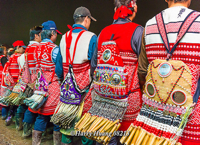
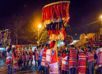

矮靈祭的由來
很久以前上坪溪上游住著一群身軀只有三尺長的矮人，他們身材短小，但臂力驚人、擅長巫術，精於農耕，而且還將農耕技巧傳授給賽夏族人；因此每年稻栗成熟時，賽夏族人會邀請矮人們共同慶祝穀物豐收。
矮人們認為長期協助賽夏族人改善農耕技術，漸漸自大起來，甚至常到部落欺負婦女，讓賽夏族人忍無可忍，但又不敢正面報復，於是開始密謀消滅矮人。
賽夏族青年想到，每次豐年慶結束後，矮人們都會爬上兩族交界懸崖上的大樹休息，因此，他們決定暗中將那棵大樹底部切去大半，塗上泥巴偽裝。果然，那年的豐年慶後，矮人們喝完酒上了大樹休息。承受不了矮人重量的大樹就開始傾斜、倒塌！砰！樹上的矮人們一一掉進深潭中淹死了。
其中有兩位矮人沒爬上樹，倖免於死，沿河逃命時，邊撕山棕葉子邊詛咒：「撕破這一片，山豬吃掉你們的農作物。再撕這一片，麻雀啄食你們的農作物。你們如果不按期舉行矮人祭，農作物會欠收，族群會滅亡！」不久後，賽夏族開始瘟疫流行，農作物欠收，認為是矮靈的報復，從此開始舉行矮靈祭，祭悼被害死的矮靈。
(文字參考原住民族委員會兒童版內容並略加修飾https://reurl.cc/eM7L7)
矮靈祭儀式
矮靈祭每隔2年舉行小祭，每10年舉行大祭，傳統是在農作物收成後的月圓前後舉行(約農曆十月中旬)。祭典時間長達一個多月，按照儀式階段可略分為祭典前、祭典中與祭典後三階段。
● 祭典前： 決定祭典時間、準備避邪用的
芒草結等工作，賽夏族人依例聚在祭場，到祭屋內向長老告解後，在祭場切分豬肉，並供各姓氏家族代表領回。
● 祭典中： 遵守禁忌及祭祀流程。
迎 靈：族人在清晨近6點時集中在祭場中央圍成環狀緩慢舞蹈、持續低聲吟唱祭歌，迎請矮靈。
會 靈：入夜後進行會靈儀式，由族人配戴舞帽與臀鈴進行會靈舞到天明。會靈舞期間長老會對族人說話，提醒族人注重傳統文化以及祭典注意事項。
娛 靈： 在迎靈與會靈後隔天進行娛靈，可供外人參觀，舉行歌舞與傳統歌謠的吟唱。
逐 靈： 逐靈就是請回矮靈，儀式過程同樣以歌舞的形式進行，請回矮靈後將場地中的泥土、支架填平，恢復原狀。
送 靈： 到野外處後送別矮靈。
● 祭典後： 祭典活動圓滿與犒賞慶功。

芒草結
祭典期間，人或是器物、房屋、進出車輛都必須綁上芒草，這具有避邪的作用，外族參觀者必須由族內朱姓氏族的成員協助繫綁，祭典結束前不可拿下。以前曾有記者未在攝影機上繫上芒草，結果每捲帶子都曝光，至今仍廣泛為人談起。
臀鈴
賽夏族特有的樂器，由竹管與薏仁米製作而成，在矮靈祭期間，每一姓氏派人背著臀鈴繞祭場舞蹈，悲傷的聲音呈現了矮靈祭複雜的心情。臀鈴為一種特殊的樂器，背在身後，有的呈上窄下寬的四邊形，有的呈橢圓形狀，上頭鑲了鏡片、亮片等裝飾，據說這種特有的神聖樂器，在矮靈祭以外的時間不可背戴，避免觸犯禁忌招犯不乾淨的事物。
肩旗
又稱為舞帽，或是月光旗。賽夏族在矮靈祭中重要的神聖物，作用為辟邪。早期，主要為扛戴在頭上的舞帽。後來因為越做越大，無法戴在頭上，改為扛在肩上，稱之為肩旗。賽夏族人相信肩旗上有矮人一同參與祭典儀式。
封庄求尊重？ 聯合報報導
今年賽夏族十年一次的矮靈大祭，分別在新竹縣五峰鄉及苗栗縣南庄鄉舉行，比起往年，吸引了更多遊客前來參與。在矮靈祭3天祭典中，必須不說謊、不與人爭吵，要與人和諧，但有部分遊客卻忘記注意部落的規定。
五峰鄉的祭典中，發生了警察制止外地人與族人間糾紛的事件，讓原是感恩、贖罪，祈求部族平安農耕豐收的矮靈祭變調，當地族人與居民呼籲「尊重族人」；而苗栗縣南庄鄉矮靈祭，近年也傳出暴力糾紛，以酒後鬧事傷人或毀損財物為主。
多年來外地人滋事層出不窮，今年特別將攤販移至會場外，還是無法避免，有人建議乾脆「封庄」，主張禁止遊客參加，但至今未定案。
賽夏族人說，族人希望矮靈祭號召「族人回家」，也以開放態度邀請外地人看見賽夏文化。矮靈祭的過程充滿矮靈與祖先的智慧，也包含對矮靈的懺悔與感謝。往後希望參與的遊客尊重原住民的傳統文化。
(文字參考：https://reurl.cc/lz1GQ)